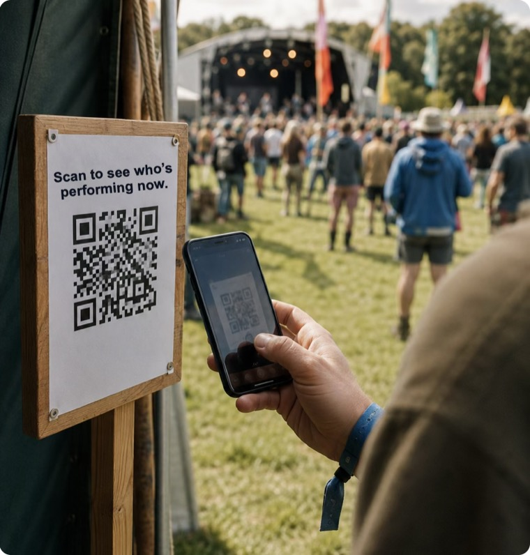
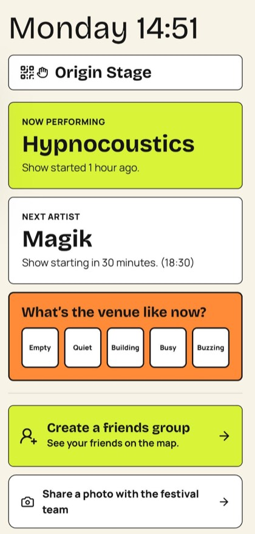

Publish updates.
In real time.
An internal live messaging board for organisers and venue teams to share information across the festival.
Festival communication and visitor coordination platform
XIP Events combines an internal live messaging board, a private festival social network and visitor coordination tools in one affordable, modular platform.

Festival communication is fragmented.
Social media, WhatsApp groups, printed signs, separate event apps, radio and staff coordination all do a piece of the job—but none of them see the whole site.
That makes it harder to communicate quickly, coordinate venues and understand how visitors are moving through the event.
See the XIP Events solution →Communication, coordination and visitor tools.
XIP Events is a festival communication platform that brings the core communication and coordination functions of an event into one private, live network.
Why XIP Events is different →An internal live messaging board for organisers and venue teams to share information across the festival.
A private festival social network where visitors can find friends and join groups.
Support discovery with activities, groups and relevant messages throughout the event.
Give organisers insight into footfall, engagement and underused areas.
A flexible base for different festival setups.
Plot venues, stages and key areas on a shared festival map for visitors and teams.
Give venues a way to publish menus and receive or coordinate visitor orders.
Let venues publish time-based discounts and offers when they want to encourage visits.
Set up private events and control who can see or join them.
Give organisers and partners a place to run relevant brand-awareness promotions across the festival network.
The visitor interface brings programme updates, venue context, friend groups and live feedback into the same place.

XIP Events gives independent festivals access to the core tools they need, with room to extend the platform as their operation grows.
Read common questions →Affordable by design.
Scalable by architecture.
A few straightforward answers about the festival communication platform.
XIP Events is a digital operating layer for festivals. It combines live messaging, a private festival social network and visitor coordination tools in one platform.
It is designed for festival organisers, venue teams and visitors. Organisers publish updates and understand activity; venue teams share operational information; visitors find friends, join groups and discover activities.
XIP Events brings together tasks that are often split across social media, WhatsApp groups, printed signs, separate event apps, radio and staff coordination.
Yes. Organisers can map venues and extend the platform across multiple sites as requirements grow.
Organisers can gain insight into visitor footfall, engagement and underused areas, helping them understand how people are moving through the event.
Use the form to tell us about your festival, the teams involved and the communication or coordination tools you need.